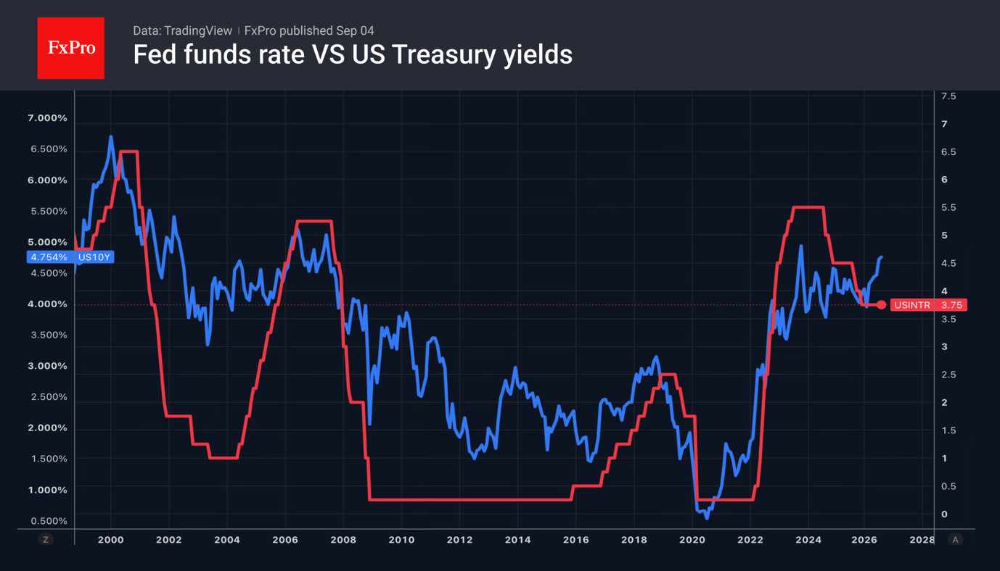

- The greenback was unimpressed by strong US employment figures.
- Japan was likely selling Treasuries for currency intervention.
The US dollar failed to capitalise on strong US labour market data. In August, non-farm payrolls rose by 162,000, three times the consensus forecast. The figures for June and July were revised upwards by 55,000. The unemployment rate held steady at 4.1%. Such figures allay FOMC officials’ fears that a rate hike could cause the labour market to freeze. The path to monetary tightening is clear, yet the USD index is in no hurry to rise.

The reasons lie in the stability of the futures market. CME derivatives continue to forecast a federal funds rate hike in September with a probability of around 60%. The likelihood of two rounds of monetary tightening in 2026 has fallen to 44%. Investors are awaiting US inflation data for August to gauge what the FOMC will do at its next meeting.
Meanwhile, Donald Trump has dismissed the idea that raising interest rates would calm the debt market and has called on the Fed to cut them. Finance Minister Scott Bessent claims that Treasury bond yields will fall as soon as the conflict in the Middle East ends and oil prices plummet to $40–50 per barrel.

It is not only geopolitics and expectations of monetary tightening by the Fed that are driving up Treasury yields. By 1 September, Japan’s holdings of foreign securities had fallen by $87.8 billion, which roughly corresponds to the currency intervention that took place at the turn of July and August. It is quite likely that Tokyo was selling US Treasury bonds, which was one of the drivers behind the rise in yields.
The fall in USDJPY is being driven by reports that the Norwegian Government Pension Fund intends to buy $17 billion worth of Japanese bonds as part of a change in its asset allocation policy. Previously, purchases were based on the size of the economy; now there is a shift towards a market-cap-weighted approach. As a result, the proportion of US bonds is falling, whilst that of Japanese bonds is rising.
The acceleration in hiring has been bad news for gold. Rising real debt market rates and the realisation that the Fed will, if necessary, go against the White House’s views are strengthening confidence in the central bank’s independence and undermining the ‘debasement trade’ – a key driver of the XAUUSD rally.
The FxPro Analyst Team